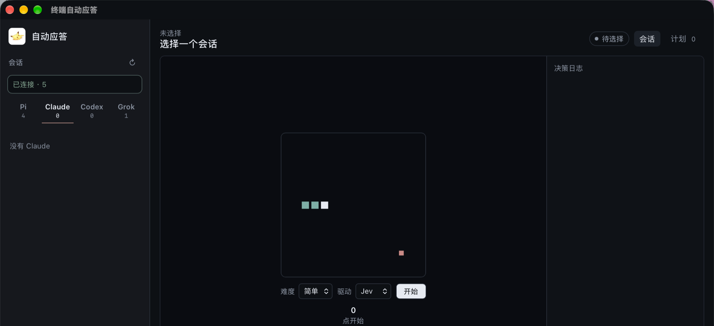
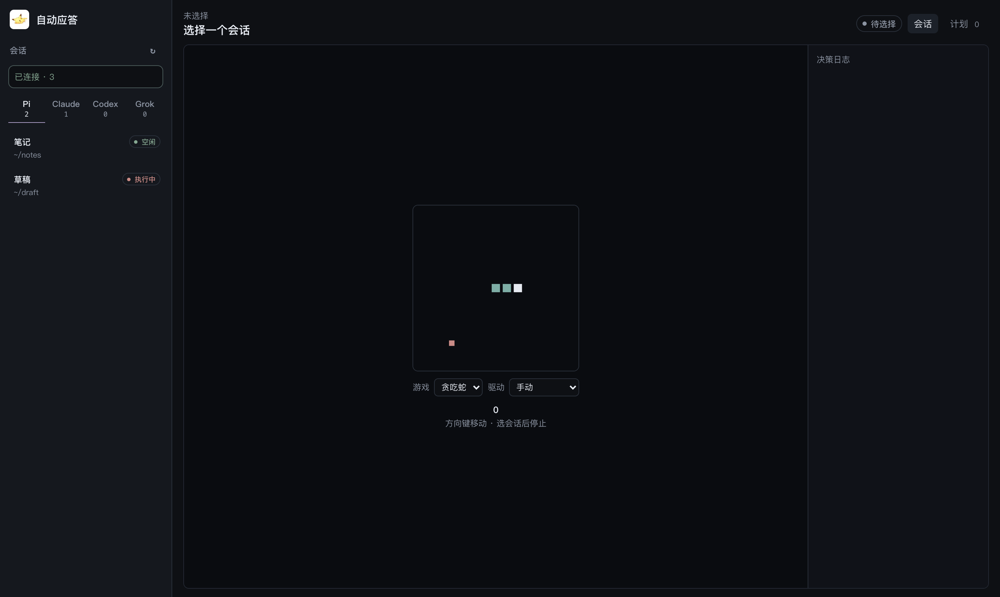
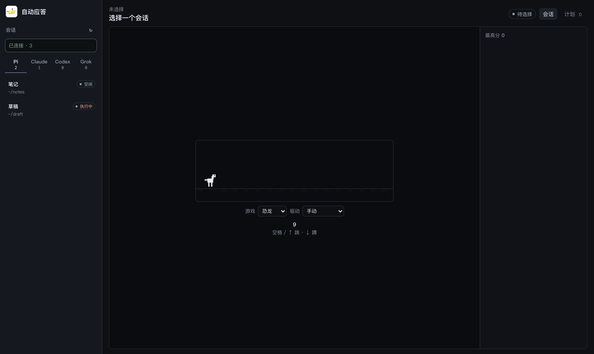
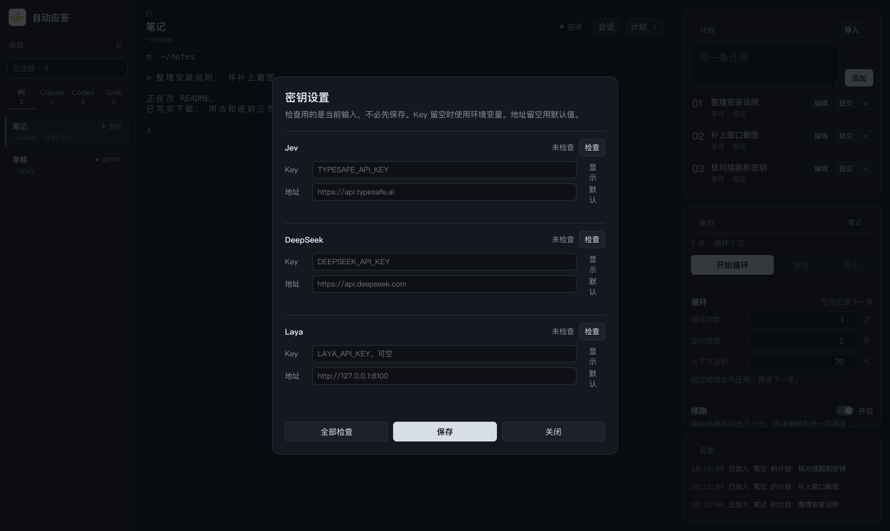

Herdr 提供
工作区、pane、agent 状态、终端画面、历史滚动，以及内置主题。主题切换会写回 Herdr 配置并重新加载。
基于 Herdr · macOS
窗口、pane、agent 和终端画面都是 Herdr 的。herdr+ 接上它的套接字，在空闲后把下一轮发出去，也可以循环、续跑、提交，并切换 Herdr 的主题。
安装包文件名仍是 pi-auto。拖进「应用程序」后若提示已损坏，执行 xattr -dr com.apple.quarantine "/Applications/herdr+.app"。

先安装并启动 Herdr。没有 ~/.config/herdr/herdr.sock，herdr+ 列不出会话。
工作区、pane、agent 状态、终端画面、历史滚动，以及内置主题。主题切换会写回 Herdr 配置并重新加载。
计划、循环、卡住时输入「继续」、续跑、提交，以及双击 Tab 补全和双击 Shift 追加预置文本。
VS Code 终端和 Terminal.app 不是 Herdr pane。agent 必须跑在 Herdr 里。
贪吃蛇和恐龙的驱动分开记。蛇可以交给 Jev 或 Laya，收到决策才走。恐龙可以交给 Laya，游戏不会停。


选中 pane 后看到的是 Herdr 正在画的那一屏。可以直接输入。滚轮翻 Herdr 历史，中文不会乱码。
写一条、导入，或改待执行的任务。计划只属于当前窗口。
空闲稳定后发下一条。超过上下文阈值会先压缩。卡住太久会输入「继续」。
每轮结束后由 Jev、DeepSeek 或 Laya 选下一步。全部结束后可再发一轮 git commit，不 push。
⌘ , 打开密钥设置。系统 → 管理快捷键，开关双击 Tab、双击 Shift 和 ⌘⇧O。主题在 herdr+ 菜单里，改的是 Herdr 自己的主题。
